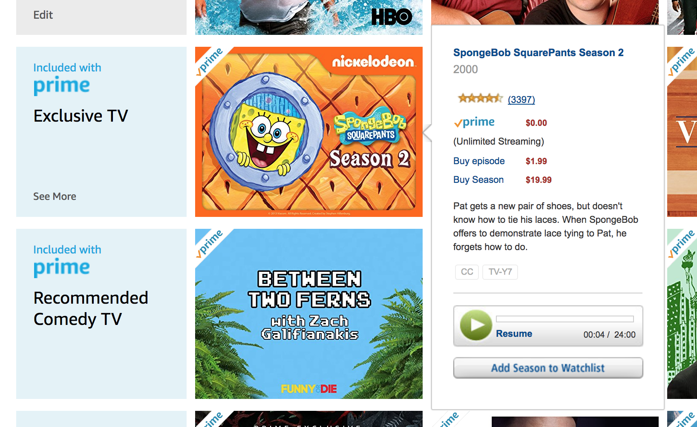

Typical Appearance
Any video or audio media player will have a simple three button interface towards the bottom of the screen: previous file, Play/Pause, and next file. The top of the screen includes the file name, and any other details about the file if available. The middle of the screen will show the video itself or the album art in case of audio files. Other buttons include volume control through buttons or a slider, options to shuffle your list of songs or repeat a single song or playlist, and a drop down menu for media settings. In the case of a video, choices for the quality of the video are usually present when streaming it online. Lastly, the slider that corresponds to the video or song length and how far into the file you are is present at the bottom of the screen.
The Nielsen Norman Group provides details about good usability practices for a site with video on it. According to the article "Video Usability" by Amy Schade, there are 2 main types of online videos: entertainment and informational. Entertainment videos are something a user chooses to watch for his own enjoyment. In contrast, an informational video teaches the user about something. The first rule is that a site that has audio or video on it should not start playing automatically. Users do not like being forced to listen to or watch something. This places a cognitive load on the user to locate the the pause or stop button. Additionally, a user should know what the clip they are playing is about. There should be some accompanying text that describes the media on the screen. Once you have given the user control over what they are playing and told them what is about, you should minimize distracitons on the page, so that they can sit back and enjoy the content they are about to consume.
Typical Behavior
Songs are listed by alphabetical order, and depending on what tab you are in you can search for specific artists or albums as well. When play button is clicked/pressed, the file will begin playing. Default speakers in the device will be used unless there are user designated speakers available (e.x. headphones plugged in, blue tooth stereo system set up, etc.). If the previous file button is pressed once, the player will return to the beginning of the current file. If it is pressed twice in rapid succession it will start playing the file that came before the current one. The next file button only needs to be pressed once to skip the rest of the current file and start playing the next file in the list.
Component in Action
Priority Metrics
For most users, media players are used to do one thing, to play the media that the user wants them to play. That being said, because it is more of a utilitarian component, there are some usability metrics that are not as importnat as others. Some of the important ones are learnability, efficiency, errors, and memorability.
Learnability: Media players have to be quickly learnable. For most users, the media player is only a gateway for them to see the actual content. The quicker it is to learn the software the better. Many media players should come intuitively. The different buttons and icons are very similar to other physical media players such as DVDs, Blu-Ray players and CD players. This similarity helps for users to quickly learn how to watch media on their devices.
Efficiency: Since it is not so much the media player that is important then the actual content being played, media players must also be very efficient. Many of the players today have many keyboard shortcuts. Arrows can be used to skip songs or to fastforward or rewind per frame. Spacebar is also commonly used to play and pause. Also there are many shortcuts for fullscreen or to adjust the volume.
Errors: Though errors are not fatal for media players, errors can annoy the user and take away from the content being shown. Errors such as play and pausing when the user wants to or wrong volume controls may not allow the user to play the video as intended. Since as said before, a media player is a gateway for the actual audio or video media. Therefore though the user may not be fatal, as long as the media does not get deleted, the errors for Media players should be very small.
Memorability: Media players should be very memorable. When a media player isn't used for a long time, the user should automatically be able to remember how it functions because for the user, their intent is to watch the audio/video content that the media player is going to play. The mental model of the media player as well as the user should not be very different. To help to make sure it is memorable, similar icons are used throughout media players for common tasks such as play, stop, or skip.
Satisfaction: Satisfaction is not a very important component for media players. As long as the media player is able to play the content that the user wants then it is doing its job. It is the job of the content itself to satisfy the users.
Key Chararacteristics what do all principles do all great media players have?
- Feedback: It is very important for the user to always get feed back for whatever action that they do. For example of the user presses play, the content should play. Also if the player pauses the video using the pause button, after clicking the content should also pause. If the content is still loading, a loading splash screen should also show up. This way the user will always know what state the media player is in.
- Universality and Consistency: Media and audio content should be accesible to everyone no matter where they are from. Universal signs for play, pause, skip and even volume are all very same and also derive from the physical machine buttons on DVD, Blu-ray, and CD players. Also many great media players will also have accsesiblity options such as closed captioning.
- Shortcuts: For easy access and for easy use, media players should also have shortcuts for the most basic of functions such as pausing and skipping.
- Transparency: When users use the media player, it is not the media player that they are intersted in, instead it is the content. Many great media players have hover and hover off states where when the user is no longer hovering or doing any action to the buttons the control panel for the media player disapeers.
Events
Hovering your mouse over the video or tapping the screen while the video is on will bring up the user interface. Clicking/pressing the Play/Pause button will trigger the file to start playing or pause at that time. If the previous file button is pressed once, the player will return to the beginning of the current file. If it is pressed twice in rapid succession it will start playing the file that came before the current one. The next file button only needs to be pressed once to skip the rest of the current file and start playing the next file in the list. Moving the slider for volume will increase or decrease the volume that the file is playing at.
State Diagram
In some media players there are two major states, when the control shown and control hidden states. In the control shown state this is when the user is able to control the video. Within this state there are multiple states:
- Idle/Paused: When the media is stopped
- Playback: When the media is playing
- (Optional) Rewinding: When the media is playing backwards
- (Optional) Fast Forwarding: When the media is playing ahead
For video media players there are also options to change states between having the video play full screen and the video playing at the specifed size.
Variants
Audio Media Settings
- Set as: Able to set the song as a ringtone or an alarm tone
- Settings: Will take you to a lot of different settings for whatever platform you are using, such as Equalizers, or play speed
- Details: Will give you every detail about the current song from Artist to Track length to the file size
- Add to playlist: Add song to a list of the users favorite songs, useful when searching for a song in a very large library
Video Media Settings
- Quality: Available options for high definition video playback (420p, 720p, 1080p etc.)
- Size: Available sizing for the video screen, almost always comes with full screen option
Platform Specifics
Mac OSX: Yosemite
Appearance
Below is a screen shot of what a media player looks like in OS X Yosemite.
Video Media Player
For Yosemite, after double-clicking on the icon, Quicktime Media player launches in a borderless window. The difference here is that there is no setting for quality. Instead it is all the same quality across the board.
Below is a screenshot of what previewing media looks like in OS X Yosemite.
This is a screenshot of what previewing media looks like in OSX Yosemite. If a file is selected, the user can hold down space bar and they can play it. Also they can press the play button on the lower right hand corner.
Component in Action
Key Characteristics
In reference to the OSX Human Interface Guideline, Apple also references that Feedback and Assistance is important. Also keyboard alternatives are also very important. They encourage to "provide keyboard-only alternatives". Other important principles that are important are:
- Direct Manipulations: An onscreen object must remain visible while performing actions on to it. Thus even though the controls may disappear on the media player, the content itself does not disapeer.
- Feedback and Communication: There should be some reaction to every action that the user does towards the media player.
- Consistency: Consistent to other versions of software and consistent to user mental models for other media players.
iOS 8.1.2 iPhone4s
Appearance
Below are screenshots of what a media player looks like on the iPhone4s in the Photos app.
Below are screenshots of what a media player looks like on the iPhone4s in the Video app.
One of the major differences in appearance is that the timeline for iOS is located on the top of the screen separate from the buttons
Video Media Player
For iOS, different media players appear depending on which application you are currently in. The buttons though are very similar to the original.
Behavior
- For the iPhone instead of clicking, the user must tap in order to use the buttons. Also instead of hovering, the user must tap on the video in order for the controls to become hidden.
- Pinching gestures allow you to zoom in and out of video.
- Depending on the user's settings, rotating the device allows the video to also rotate from a smaller view to a larger view.
- Volume controls can be altered by either sliding the volume bar or pressing the volume buttons located on the side of the device.


Android S5
Music
- The ability to skip songs by swiping left or right on the album cover art
- Tapping on a small star in the middle below the song’s information will add the song to your “Favorites” playlist. The star will light up, and if tapped again it will take the song off of your “Favorites” playlist and the star will turn off
- A button on the bottom left will show you all of the song names in the current playlist, and a button on the bottom right will add the current song to a playlist. If no playlists have been made you can create a new playlist with the current song as the first entry
- In addition to the volume controls on the left side of the phone, you can tap on the speaker icon in the top right to pull up a volume control slider, that goes from a max of fifteen to a muted zero
Video
Youtube
YouTube is a site primarily used for user’s to display their own content. YouTube also provides users with options to buy films. YouTube’s video player contains the standard video player options: Play/ Pause Button, Full Screen Button, Progress Bar and Volume Controls.
The Setting Button opens a menu that has a few options: autoplay, annotations, speed, subtitles/CC, and quality.
Setting Options:
- Autoplay Button: The button has the red check it will keep playing the next video that youtube’s algorithm picks and think you will like because the user is watching the current video. If annotations are on then the user can see what the video creator is linking or if they have anything linked on the side.
- Speed Controls: Allows the user to control how fast the video is playing, they have speeds going from .25 to 2 incrementing by .25 each time.
- Subtitles/CC (2) Controls: Allows the user to toggle closed captioning. It also gives the user an option the have google try to translate the video.
Other Features of YouTube:
- Next Button: Allows the user to skip to the next video YouTube has queued up.
- Close Captioning Button: Allows the user to toggle captions on and off of the video.
- Theater View Button: Allows the user to toggle between Theater View and Default View. The Theater View increases the size of the video player in the tab and places black bars on either side of the player.
- Play on Tv Button: Allows the user to cast the video to an eligible Tv.
- Right Clicking on Toolbar: Gives user options regarding the video. Image Below.
- Skip Ad Button: Allows the user to skip the current advertisement playing, if the option is allowed.
- I Icon Button: At the top right of the screen, and allows the conetent creator to put links or other items into there. Ie. merchandise, playlists, advertisments, etc
- Replay Button: Allows the user to replay the video. If the video has finished, the Play Button is replaced with the Replay Button.
Below is a list of shortcut hotkeys:
Netflix
Netflix is a site that hosts TV shows and movies. After users pay a monthly subscription fee, they have access to Netflix's library.
- Title: Netflix tells you the name of the episode, what episode you are on, and season number underneath the progress bar.
- HD Button: Allows the user to change the quality to HD so 720p or higher if the computer can handle it.
- Season/ Episode Button: Allows the user to see the other episodes and seasons of the current show in a small pop up window that appears if this button is pressed.
- Next Episode Button: Allows the user to skip to the next episode in the queue.
- Skip Intro Button: Allows the user to skip the intro
- Back Button: Allows the user to go back to the options
Netflix shortcut:
- Space: Toggle Play/Pause
- Enter: Toggle Play/Pause
- PgUp: Play
- PgDn: Pause
- F: Full-screen
- Esc: Exit full-screen
- Shift+Left arrow: Rewind
- Shift+Right arrow: Fast Forward
- Up arrow: Volume Up
- Down arrow: Volume Down
- M: Mute toggle
UStream
UStream is a video streaming and video hosting company. The site is primarily used by professionals and enterprises. To use the the full site users must pay a fee.
Core Features:
- Share Button: Allows the user to share the video and has 4 options, Facebook, Twitter, copy link, embed. When a user clicks Facebook it takes you to your profile and pastes the link into the text box to post the message on your account. Same thing with Twitter. Copy link, copys the video into your clipboard. The embed makes a pop up on the video and allows you to copy the code to embed the video if you are going to use it.
- Flag Button: Allows the user to flag a video for various reasons
- HD Button: Allows the user to change the quality of the video to either 260p, 360p, 480p, 720p, or 1080p
- Theater mode: Allows the user to change the video player to become about the width of the browser so it is more clearly and neatly presented.
- Live Icon: Indicates whether or not the video is live. If it is there it means it is live otherwise it is not.
- Popout Button: Allows the user to make the video open in a new window.
- Closed Captions: Provides users with captions for the video.
Vimeo
Vimeo is a site primarily used to display user created content. Vimeo’s video player reflects the sites decision to focus user content by providing unique features.
Core Features:
- Like: Allows user to like a video.
- Add the Watch Later: Adds video to a playlist easily accessible to the user.
- Add to Collections: Adds videos and work to ablums named collections.
- Share: Allows user to share video with other users or through other platforms.
- Play/ Pause: Pauses and plays the video.
- Buy Show: Depending on the content, like if a user was watching a trailer for a show, a button may be replaced for an option to buy a season of a show.
- HD: Options to change the resolution appear after being clicked. The various selections range from auto, allowing the player to make the decision for the user, to the max resolution the video was designed to handle.
- Fullscreen: Expands the video to cover the screen or decreasing the video back to its original size.
- Progress Bar: Keeps track of the duration left on the video. Hovering over the bar displays a screenshot of the scene at that time.
- Volume: Users contorl the level of the volume with the 5 bars representing volume levels.
Notes:
- The Like button has the icon of a heart. The Add to Watch Later button has the icon of a clock. The Add to Collections button has the icon of stacked papers. The Share button has the icon of a paper airplane.
- On large difference between Youtube’s video player and Vimeo’s is that even though Youtube allows for most of the above features, those buttons wouldn’t be located on the video player itself, but rather on the description of the video below the player.
- Each of the icons are highlighted blue as they are passed over. The icons at the top right also inform the user of their function. The volume icon is special though, it isn’t highlighted blue, rather whichever bar of the five bars the cursor is located on, increases in size so as not to confuse the user of what the volume level is currently at.
- The Progress Bar of the video is set up in three colors. Blue represents what part of the video has been watched already. Grey represents the amount of video already loaded. Dark grey represents the amount of video yet to be loaded or watched.
- The volume button is unique to Vimeo's webplayer. Clicking on the largest bar of 5 bars will increase the volume of the video to max, while the smallest will virtually mute the video. Users can also drag from right to left along the five bars to achieve their desired volume levels. The color on the bars changes from grey to blue to indicate volume. All grey meaning no volume, all blue meaning max volume.
Twitch
Twitch is a live streaming site meant primarily for allowing streamers to stream gameplay content. There are two players to consider when viewing Twitch’s webplayer. The first is their standard video player and the second is available when the user wishes to browse for other content.
Core Features:
- Browse button: If a user clicks onto a stream and then clicks onto the browse button, the video will shrink onto a small player displayed at the bottom left of the website allowing users to browse for a new stream while staying entertained with another stream. The window of the player tells the user whose channel the user is watching and gives the user an option to close the window. There are only two buttons available on the small player. One is the standard Play/ Pause button and the other button restores the stream to the users main stream. The icon looks like a small window turning into a fullscreen window.
- Live: To indicate that the video streaming is live, the video player displays “a red circle” and the word “LIVE” at the top right of the screen.
- Play/Pause: The video has a Play/Pause that alternates icons when the player is either playing or paused. This button, like most, is located at the bottom left of the screen.
- Volume: The volume is controlled by a Speaker icon.
- Settings button: Once pressed a box appears giving the user additional options.
- Theater Mode: The icon beside the clip icon allows the user to put the site into theater mode. This mode increases the size of the video player when not in full screen, darkens the screen to make it easier on the user’s eyes and displays the chat room neatly beside the video.
Settings:
- Resolution: Allows the user to change the resolution of the video.
- Pop Out: Pops the video player out into another window.
- Flag: Reports the video to the site. Usually used to removed videos that go against the intention of the site.
- Advanced Options: Allows the user to turn off the html5 player, remove the mini player that pops out for users when they browse and show stats regarding the video.
Notes:
- When the icons are moused over they are highlighted in a soft purple hue. When the user hovers over the different buttons, users also get to see what the button does (i.e. if the user hovers over the play button, the words “play” appear over the button).
- The Speaker icon can be clicked to mute and unmute the stream. The icon will appear as a speaker with an x through it if the stream is muted. Beside the speaker is a Progress Bar that the user can use to control the level of the volume. A bar is located on the Progress Bar for the user to move left and right to control the volume. The percentage of the volume is shown by the color of the bar. If the bar is all grey the stream is muted and if the bar is all purple the stream is at max volume.
- When in Theater Mode a button appears at the top right of the screen, giving the user an option to cover the chatroom with the video player. After the user clicks the Theater Mode button, the Theater Mode button then turns into an Exit Theater Mode button.

HBO GO
Core Features:
- Progress Bar: The progress bar is a small line above the play button.
- Play/Pause: The video has a Play/Pause that alternates icons when the player is either playing or paused. This button, like most, is located at the bottom left of the screen.
- Volume Button: Hovering over the volume button will open up the volume progress bar and you can slide the little dot right and left.
- Share Button: When the share button is pressed a new video player display changes to give options to the user for sharing. From left to right the share options are Facebook, Twitter, Email and Embedding the video.
- Watch Next: The Watch Next button when pressed displays the video next on the user’s queue, determined by HBO.
Notes:
- The video player’s icons disappear when the mouse is inactive for a second or removed from the view of the player.
- At the top middle of the screen is the word Share in bold white and below share is the title of the video in light grey, not bolded. In the middle of the screen is a list of all options HBO allows it’s users to share their video. The icons slightly highlight when hovered over.
Amazon Prime video is a video streaming service for Amazon Prime members. You can stream digital movies and TV shows on a computer, Amazon Fire TV, Blu Ray consoles, Smart TVs, and more.
The layout of the buttons on any video are standard. It is interesting that Amazon makes use of AutoPlay when you click "Watch Now" or "Resume" (see the Spongebob example below) on a video. As outlined on this site, most usability experts recommend not using Auto Play features. However, Amazon uses it when you initially click on a video, and it automatically plays the next episode in a series. There is an option to disable this, but it is not immediately obvious.

When watching a video, the screen takes up the full page and there are no distractions. However, as mentioned on the "Events" tab on this webpage, Amazon follows a control hidden pattern. The picture below shows that when you move your mouse on a video that is playing you are shown a series of controls. The most prominent 3 buttons are a play/pause button and two buttons that let you fast forward or rewind by 10 seconds.
Core Features:
- Close Player: Exits the current title and returns you to main page.
- Full Screen: Makes the video play on the entire screen.
- Volume Button: Vertical slider to adjust the volume.
- Options: Option to change the video quality from Good (.38 gb/hr) to Better (1.4 gb/hr) to Best (6.84 gb/hr).
- Subtitles and Audio Allows you to turn subtitles on or off.
- View All Amazon tells you which actors play which characters. The View All buttons lets you see the whole cast of a show.
- Next Episode Let's you jump to the next episode in a series.
References and Sources
Apple OSX Human Interaction Guidelines document https://developer.apple.com/library/mac/documentation/UserExperience/Conceptual/OSXHIGuidelines/DesignPrinciples.html#//apple_ref/doc/uid/20000957-CH18-SW1
Video Usability https://www.nngroup.com/articles/video-usability/
Contact GitHub API Training Shop Blog About © 2017 GitHub, Inc. Terms Privacy Security Status Help